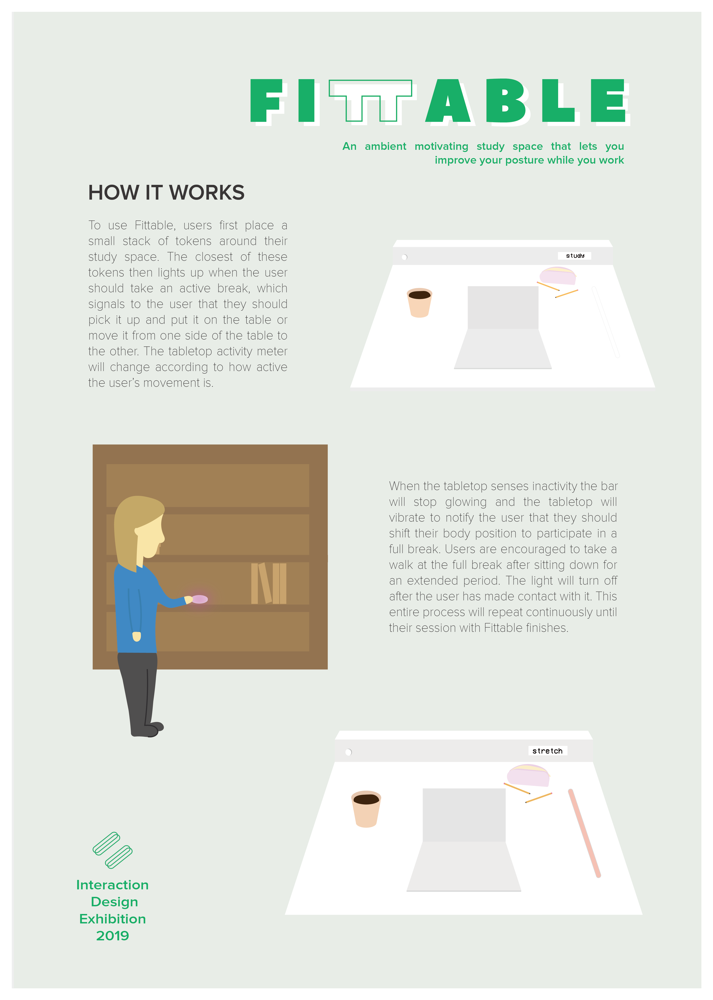
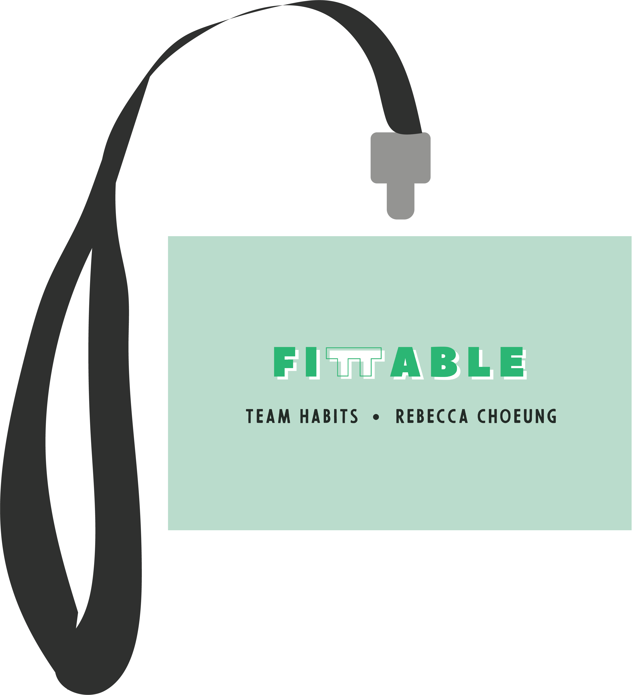

Fittable underwent numerous iterations during the design process with regards to the form, functionality and aesthetics. Our concept was inspired by some existing projects that aimed to improve posture and draws on research investigating the most effective ways of reinforcing positive postural habits. A background survey showed that feedback and breaks are the most important factors to consider in designing to enforce healthy postural change, and this was reflected in our design.
Feedback & Notification: Providing feedback to the user regarding their progress with posture is essential in reinforcing a positive habit. Research found that when users received a digital prompt or vibrating notification, they were more inclined to adjust their posture appropriately.

Active & Passive Breaks: Breaks form the basis of our informed design. There are two types of breaks - active being one where the user is engaging in consistent bodily shifts and passive, where the user must step away from their work and relax. Simple exercises and stretching is encouraged as part of breaks.
Team Habits has considered existing wearable technologies and previously explored physical forms such as sit-stand desks and ergonomic chairs in the development and design. By analysing the most effective methods and understanding shortfalls we have created an unconventional concept addressing our focus space. My role in this project consisted of designing some promotional material, overseeing prototype aesthetics and assisting in the physical build as a UI/UX designer. As part of this role, I was tasked with creating a poster describing how to interact with Fittable and an explainer video that demonstrated our research and overall concept. These supporting materials were essential in situating the context for our project and giving the audience an initial understanding of what we were trying to achieve.
The physical build of the prototype was assembled a little late in the design process. There were some complications with sourcing the required materials but after everything was acquired the build went smoothly. While assembling the box component of the prototype, we made some mistakes with the measurements which diminished the aesthetics but had no adverse effect on the overall prototype. Unfortunately the same mistake was made when constructing the tokens which did affect the form to a slight extent. I also undertook a development role in the design process by attempting to implement the LCD screen feature. This component was a supporting feature that drew from research indicating that reinforcement of habits is best achieved when feedback is provided back to the user. The idea was to provide visual cues (in addition to the activity meter and vibration motor) in consideration of first time users who may be unfamiliar with the system. I was unable to implement the functionality for the LCD screen, and given the time constraints we substituted the component for a mobile screen which still reflected the same concept.
Overall, the project achieved some success yet also encountered some failures. A final prototype was produced but the full functionalities could not be demonstrated at exhibition due to technical difficulties. The most successful aspect of the physical prototype was the activity meter. I believe that this feature alone was able to demonstrate a key point of our entire concept because it embodied the research surrounding feedback and notification cues.
I focused a lot of effort into ensuring that the visual aesthetics of our space was well put together and resembled a real study/bedroom setting. My vision was to create a comfortable and familiar environment where users could envision themselves interacting with the prototype in the intended environment. I think we were very successful in conveying this, and many people seemed to enjoy the aesthetics. It is difficult to measure whether or not we were successful in reinforcing positive postural habits as this would require longer interactions and continual use of the product. However, I hope that we were able to raise a higher awareness about the importance of good posture and inform people that there are simple and unobtrusive ways to improve and maintain posture.
In terms of how I would approach this project differently next time given my experience, I would definitely allocate more time for completing tasks. With regards to Fittable, I think that ensuring the functionality works is of more importance than the physical build itself. The technology should be a team effort so that all members are aware of any issues and can provide assistance.
Poster
Video
Lanyard Card
